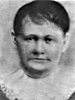
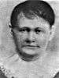

The Family of John William and Frances Emeline Nixon Dutson
Home
Histories
Charts
Photos
Maps
Restricted
News
Info
Contact
| <--(return)-- |    | John Dutson and Ann Green  |
----> |   
| John William Dutson and Frances Emeline Nixon He also married Elizabeth Jane Cowley and Caroline Jenkins and Ann Palmer. |
|
Frances Anne Dutson 22 Jan. 1874 - 23 Apr 1940 The 1st child of John William and Frances Emeline Nixon Dutson |
| * | Franklin Washington Carling Dutson - 2nd child, 22 Feb. 1876 - 10 May 1878 |
|
Phoebe Jane Dutson 5 Sep. 1879 - 26 Feb. 1900 The 3rd child of John William and Frances Emeline Nixon Dutson |
|
William Henry Dutson 10 Dec. 1883 - 24 Jun. 1927 The 4th child of John William and Frances Emeline Nixon Dutson |